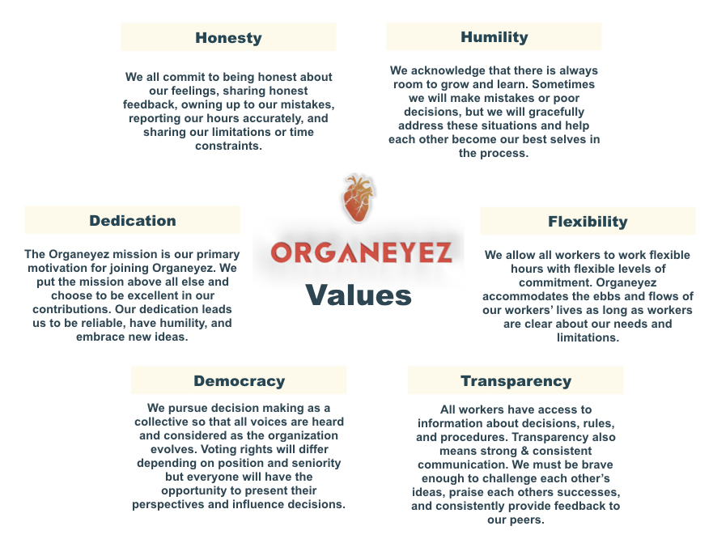

Participate in engineering team meetings twice a month
Build out features for our applications
Become proficient in Ruby on Rails, Javascript, html, and css
Help engineering team make technical decisions
Learn to navigate our code base and identify bug fixes
Contribute to documentation for our codebase
Internship Structure
Length: 12 weeks
Time Committment: 5-10 hours a week
Interns will meet with their managers to identify relevant goals for their internship
Interns will then complete assigned work on a week to week basis. Managers will assign work based on the goals established at the beginning of the internship.
Interns will be able to meet with different team members to learn how to complete specialized tasks and to recieve feedback
Interns will sometimes have to self-teach and learn new skills through online courses and videos
Interns will submit weekly reflections on their experience
Interns are expected to attend the monthly All-Hands meetings
Ideal Qualities
Passionate about social justice
Organized and able to work independently without being micromanaged
Intrinsically motivated
Good at communicating ideas, feelings, and thought processes
Comfortable with giving and receiving both positive and negative feedback
A knack for producing excellent work
We are a distributed team so access to a laptop and ability to participate in remote video-call meetings is crucial
Resonate with our values

Application Process
Send an email to info@organeyez.co with your contact information, resume, and a brief explanation of why you want to join Organeyez.
Meet with an Organeyez worker to review Organeyez DNA, values, mission, etc
Determine together with director if the position is a good fit